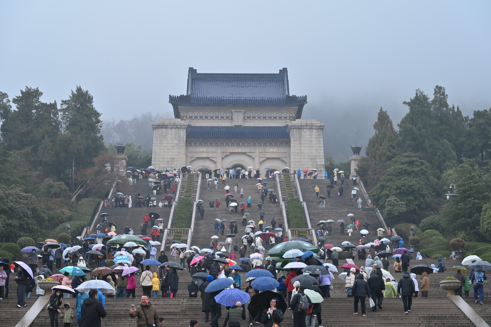
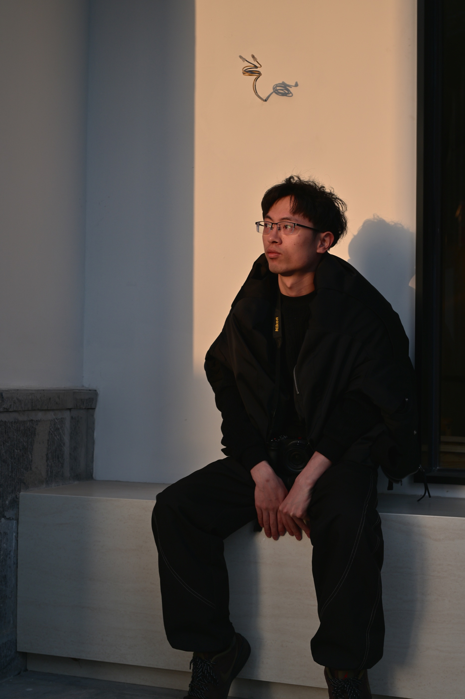
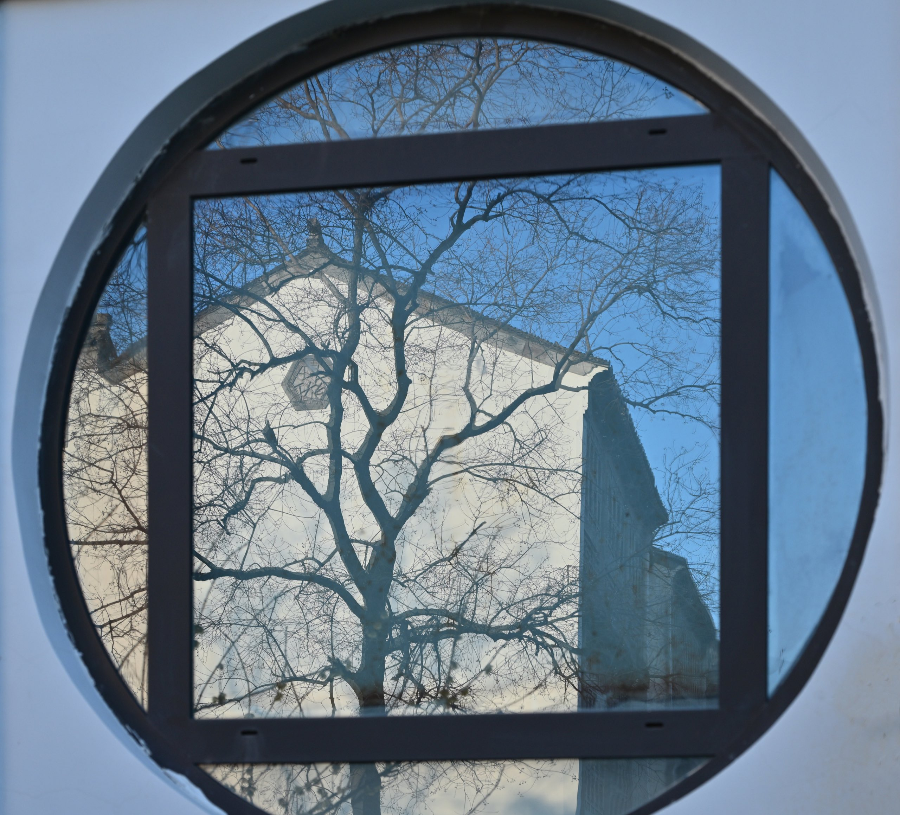
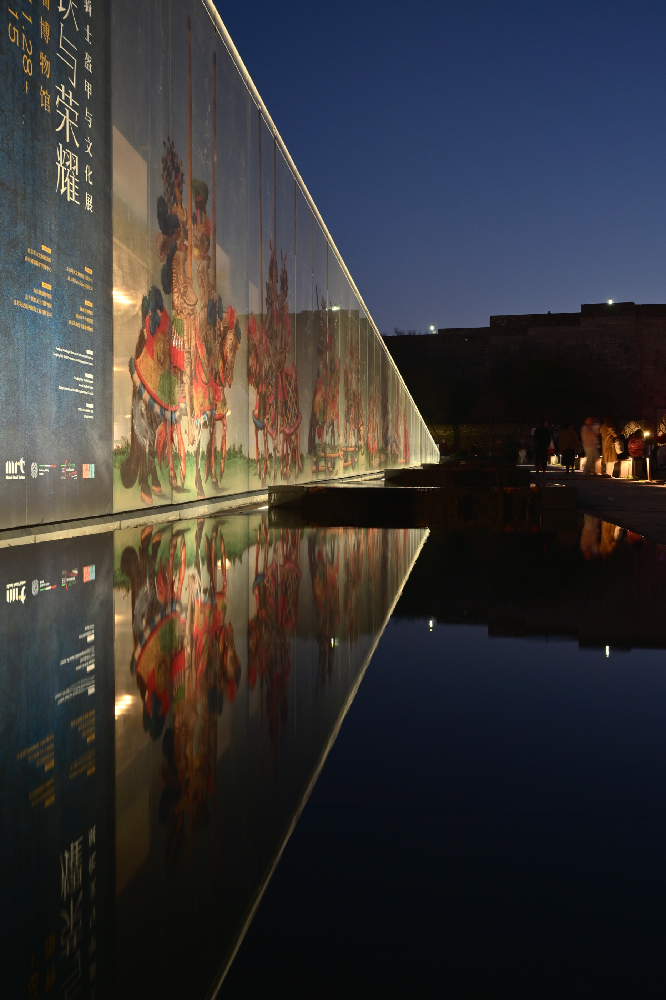
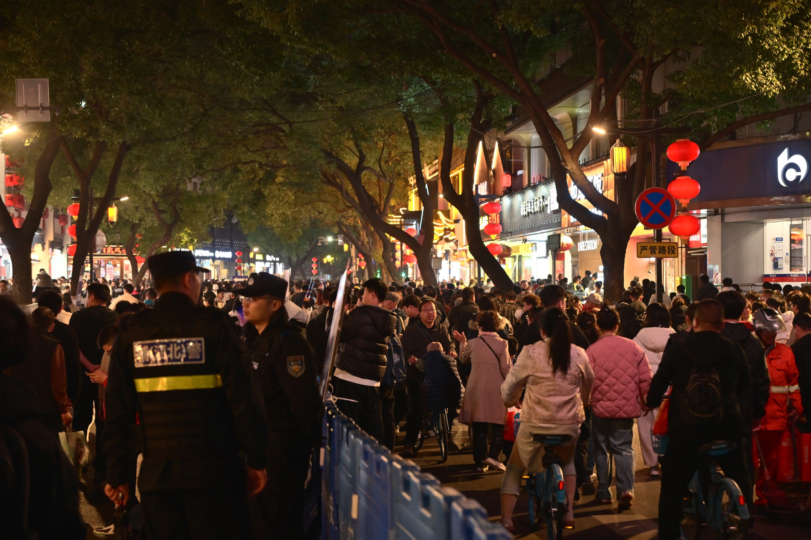

旅行
南京游记
前言
当初是谁说要来南京的
在一辆黄色的当地出租车里，我坐在后座的中间，左边是穿着白色羽绒服的lucky，右边是黑色薄外套的阿呆，前座是夹克衫的掏粪。这已是在南京的最后一天，我们在前往酒店的路上，离这次旅行的结束不过一个小时。
“当初是谁说要来南京的？” lucky嘟着嘴，收敛不住笑。
是的，我已经记不清当初是谁第一个提出要来南京的，只记得要按照往年的惯例，和lucky在春节聚一聚，既然他不能来找我们，那只能我们去找他。
我想起出发前三天，当我把小红书的攻略整理到平板里，看着一旁崭新的、立在桌面上的相机，我明白南京于我是个练习摄影的地方；
当掏粪在群里零零散散地分享不知从何处找来的小吃店名时，南京于他是个吃美食的地方；
当老头和阿呆带着大包小包、等待火车的到来时，南京于他们是个中转的地方；
至于lucky，他向来是只出一个人，事后还要开玩笑，猛烈抨击，南京于他就不是个地方。
我小时候去过南京，依稀记得和母亲站在老门东的门牌下，外面天色已黑，人群黑压压地一片前进着，走向灯火明亮的夜市。
老头也去过，在南京大牌档的底下，他说高二那年的暑假，和高中同学在这里吃了晚饭，掏粪也在；
lucky十年前可是南京的常客，久住在新街口附近的姑姑家里。
但要说现在的我们对南京是个什么看法，我们只能摇摇头。毕竟一个地方去过但都忘了，那就不算是去过。
所以才有了此次的出行。

旅行
老门东
我和阿呆走在斑马线上，下午四点的太阳投下柔和、温热的光。线后面的汽车整齐地排列在一起，长得望不到底。一旁身穿绿色警服的交通警察，手里拿着指挥棒，左手笔直地展开，右手抬到胸口的位置，时不时吹动口哨，警告司机此处不能左转。
“我想快点把这杯奶茶扔掉。” 阿呆摇了摇手里还剩四分之一的奶茶，这是在半个小时前跟着老头点的茶颜悦色。我猛吸了一口自己的那杯，也跟着摇了摇，
“南京的司机也太坑了，横冲直撞也就算了，还有两公里就停了，钱却算进去了。”
我看着地图，和阿呆往老门东的方向走，说好和掏粪他们在北门汇合，心里还有点愧疚。
我们是在中午十二点下的火车，坐了半个小时的地铁，在正午的大太阳下步行了一公里后抵达的民宿。
民宿在徽商银行的后面，从外观看，是座经营状况不错的办公楼改建。
“现在我学聪明了，都是从实拍视频里民宿外的走廊来判断好坏，一般走廊装修好的，里面基本也不会太坏。” 我自信地分享自己挑选的经验，带着大家向门内走去。
门廊是块劣质、带着污点的木板，左侧墙壁旁放着一张小的透明桌，上面摆着塑料的装饰花，右侧是唯一的卫生间，排风机发出轰隆隆的声音，像是在下雷雨，房间弥漫着不知从哪发出来的、腐烂的气味；客厅光秃秃地放着沙发床，一张小木桌挤在窗户旁，过道狭小；二楼两张大床紧挨着，隔开的内间封闭得像座棺材。
毫无疑问，我被骗了，但却是大家一起买单。
当看到老门东底下的人潮时，我就知道短时间内不可能和掏粪他们相遇。从入口望去，不是记忆里黑压压一片的人海，而是穿着各色衣服、像蜗牛一般向前蠕动的男女老少；入口处还有将近二三十米的队伍。
手是不好伸开的，脚是需要等待，才能向前迈一小步的；眼睛除了去看前面人的后脑勺，就只有街道两边开的商铺；一不留神，就找不到刚才还在一旁的阿呆了。
“走吧，没必要一直往里硬挤。”
我跟着往回走的阿呆的背影，低着头，缩着肩膀，又回到了入口。
在去「大报恩塔」的小路上，阿呆时不时地停在原地，举起挂在胸前的相机，对着晴天、墙壁和居民楼拍照。我像开关一样打开寻找猎物的眼，开始打猎。

旅行
夫子庙
落日时分，红彤彤的太阳倒映在秦淮河上，几艘小型游船缓缓地开往岸边，船顶亮起橙黄的修饰灯，底下悬挂着红灯笼，湖面波光粼粼，像幅印象画一样染上颜色。河边有座桥，桥上车流不息，行人走在两侧的高地上，有拿着红旗、走在前头的导游领队，放大的声音从胸前的扩音器里传来；有倚靠在栏杆，高举手机自拍的情侣；有骑在父亲肩上、手指远方的小男孩…
“掏粪他们到底什么时候来？” 我站在桥上，眺望远方的城墙，墙上依稀可见人影。
阿呆摇摇头不说话，忽而他扬起头，脸朝向侧方，“这不来了嘛。”
我循着他指示的方向，看着他们三人穿过街边卖糖葫芦、玩具的小商贩们，lucky一边说，一边止不住笑，声音变得越来越清晰，
“南京啊，我觉得不如…”
时隔两个小时，这是我们第一次的相遇。
下次相遇时，lucky坐在钢铁博物馆一旁的椅子上休息，天空一片深蓝，已看不见太阳，月亮也未露面，椅子旁的水池倒映着博物馆的宣传画。
“我看啊，要说最无组织无纪律的，就是你和阿呆了。”
我挠挠头，笑着不说话，只是拿着相机，蹲坐在靠近水池的地上，寻找角度按下快门。

后来我们上了次厕所，又走散了，在秦淮灯会下重聚。
“我刚在网上找到一个人，他能免费带我们进去，去不去？” 阿呆加快了脚步，小跑到走在前头的我的一旁。
我摇了摇头，只是往夫子庙的方向走去，“天下哪有这样的好事，能免我们每个人90块钱的门票钱。”
夫子庙的情形和下午的老门东相似，不同的是，晚上遮住了部分衣服的颜色，眼前是黑压压的一片。为了管控人流，每过三百米，就有一列穿着警服的警察，他们立着军姿，警告每个逆行的人。
途中遇到一个地方排起了长队，在队伍的前面人们纷纷举起手机，对着同一个方向，原来是条挂着灯笼的龙。
自此，我们便不抱有任何希望，朝出口的方向离去。
